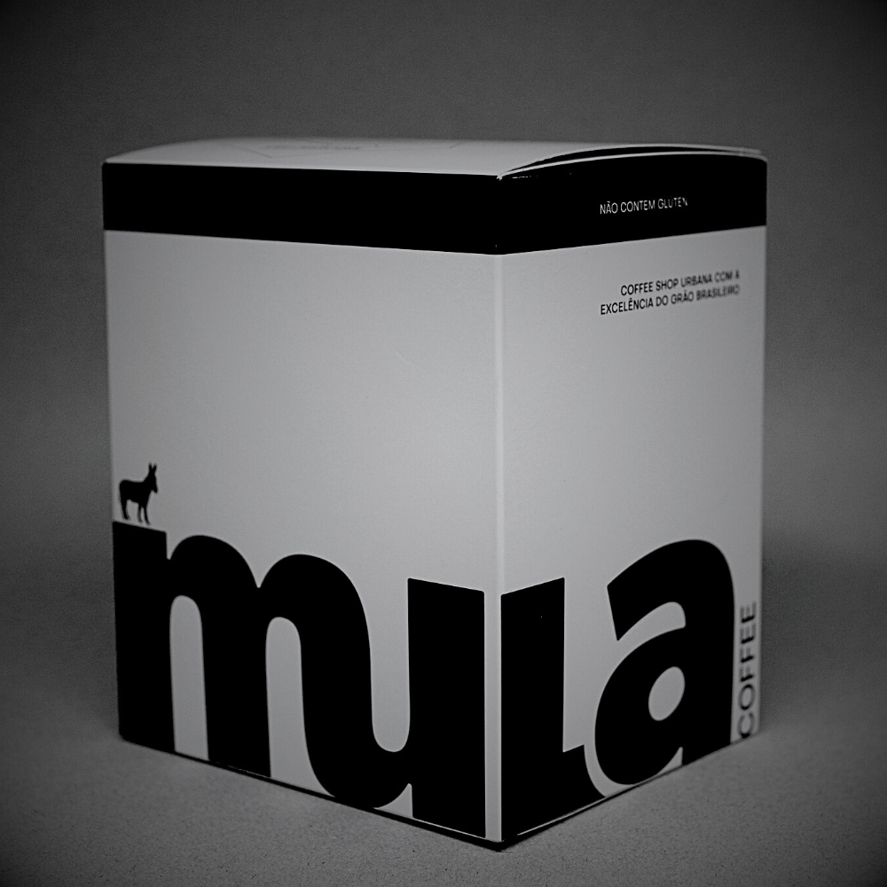
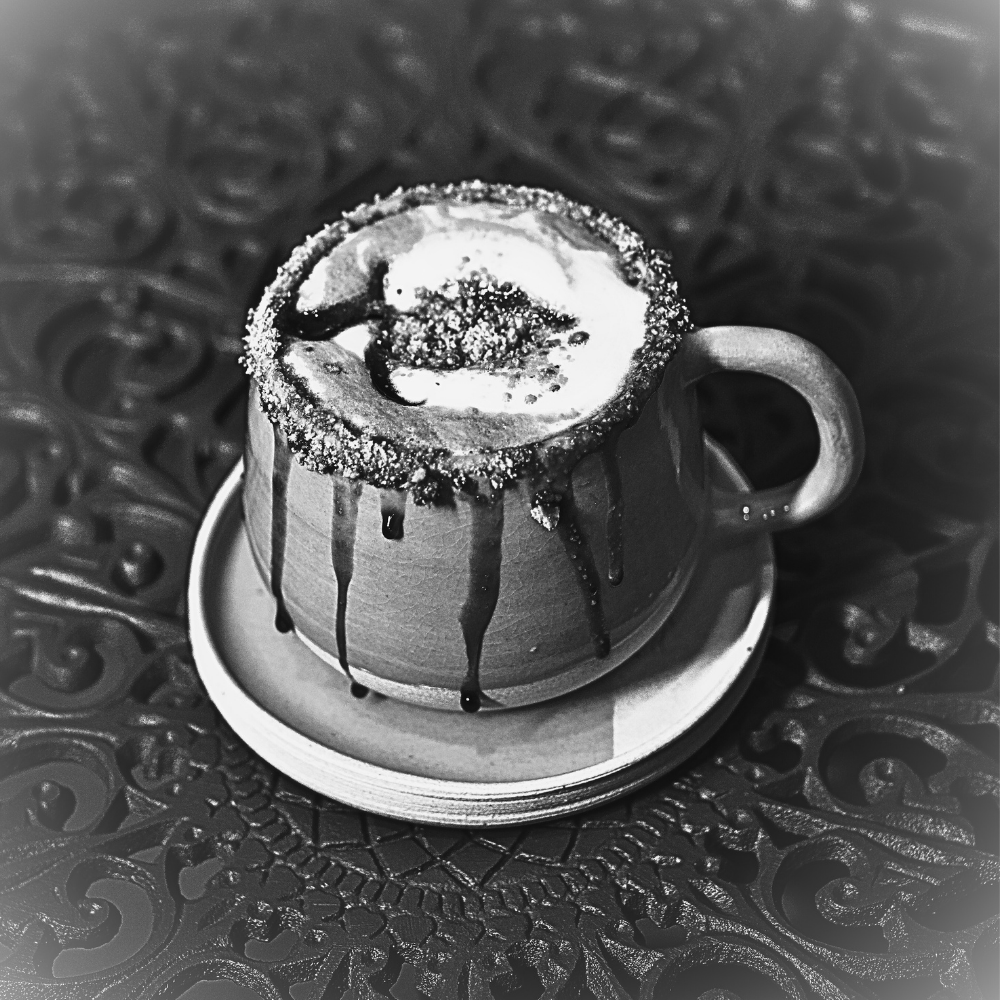

O nome Mula Coffee carrega a história comercial brasileira: da expansão para o oeste, da interiorização da colônia, dos ciclos regionais de povoamento e produção, da formação da indústria cafeeira, entre outros marcos. O transporte no lombo de muares converteu o peso das sacas de café, de 75 kg para 60 kg, adaptando-se à capacidade do animal (120 kg). Desse ângulo, o vetor mula trouxe vantagem competitiva e ditou a cadeia de produção, transporte e comércio de um dos principais produtos do Brasil: o café. Literalmente, foi a mula que fez a roda girar. Evocando esse passado bandeirante, rural e desbravador, a mula também é símbolo de força, resistência e tenacidade perante o trabalho, já que nenhum outro animal superou as hostis matas atlânticas, cerrados e agrestes desse Brasil. Ela surge ainda como metáfora da identidade do Brasil-nação: um povo híbrido, mestiço, mulato, e, por isso mesmo, de tanto valor. O Mula resgata essa história, pois nutrir a autoestima de ser brasileiro é o nosso propósito.


Inicialmente, parecem 03 maneiras diferentes de dizer a mesma coisa, mas não. Café seria uma espécie de bistrô, servindo refeições leves e alguns drinks. Cafeteria remete a um refeitório, onde os clientes se servem - uma lanchonete. Já um coffee shop é uma loja de grãos, cápsulas e drips. Ou seja, um local especializado na alta qualidade dos cafés, com curadoria rigorosa, torrefação personalizada, cuidado no envase e na apresentação do produto final. Repare que, nesse formato, o foco é na experiência do cliente, é sobre narrar o trajeto do grão até a xícara. Essa é a proposta do Mula: honrar a tradição brasileira de excelência no cultivo, agregando valor a um produto que há tempos não é mais commodity. A pergunta que nos moveu: temos o melhor grão, a maior produção, mas por que ainda não temos uma coffee shop pra chamar de nossa? Mula é puro Brasil.
Nosso branding, menu e cafés exaltam a cultura nacional, da originalidade dos produtos à identidade visual. E não poderia ser diferente, afinal, nós brasileiros, somos os maiores produtores mundiais, lideramos o ranking de exportações e marcamos presença em todos os continentes; com ampla tradição em qualidade e quantidade. Os cafés Mula têm rastreabilidade garantida pelo INPI, com Denominação de Origem do Cerrado Mineiro - 1ª região do Brasil a conquistar tal selo. Patrocínio (MG) é hoje o município com a maior produção de café do mundo. Temos muito orgulho de oferecer cafés exclusivos e sustentáveis, numa parceria com a Cooperativa dos Cafeicultores do Cerrado (Expocacer), uma das grandes forças da cafeicultura nacional e internacional. A verdade é que ninguém produz como nós, e os brasileiros merecem beber o melhor café. Café: paixão nacional!